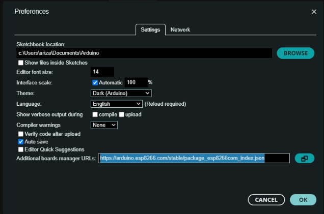
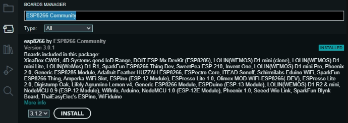
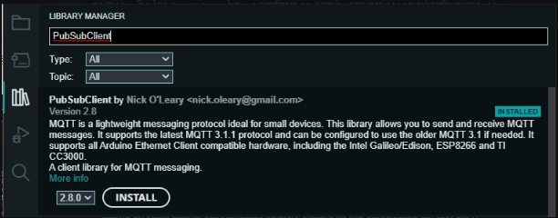
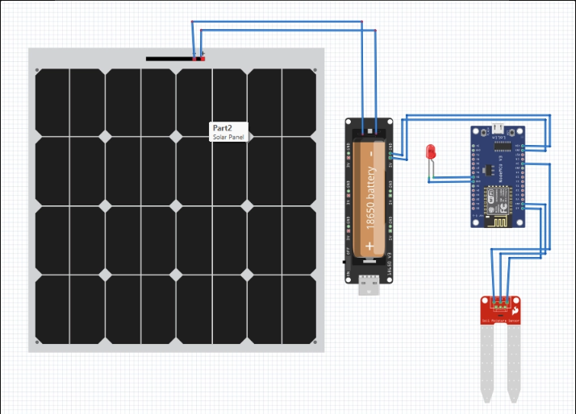
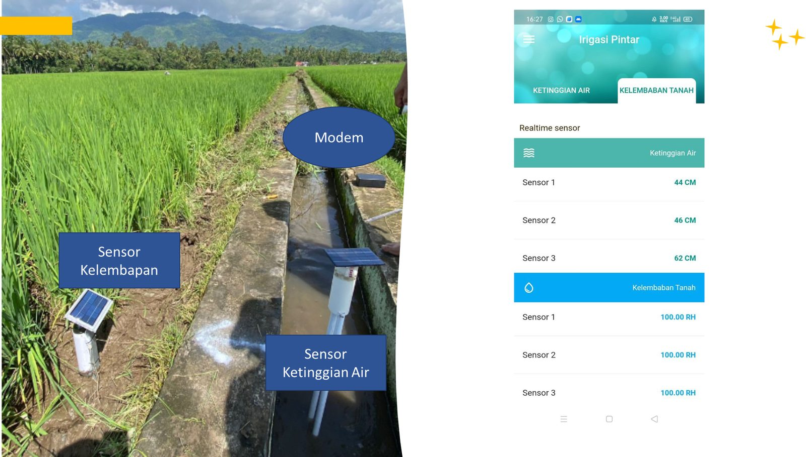
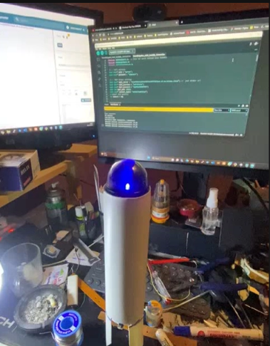
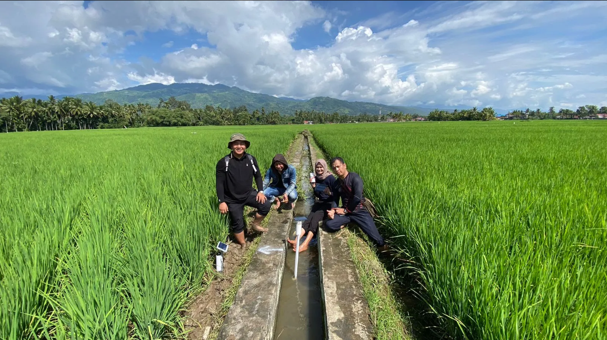
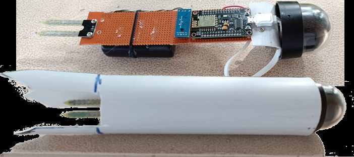

Dokumentasi alur lengkap: konteks program, instalasi driver & Arduino IDE, wiring, source code NodeMCU ESP8266 untuk membaca sensor kelembaban tanah & ketinggian air dan mempublikasikan datanya ke broker MQTT, hasil implementasi di sawah, hingga integrasi ke mobile app Irigasi Pintar (Irpin Solok) yang dipakai petani.
Tiap node membaca sensornya secara berkala lalu mempublikasikan nilainya ke broker MQTT. Di lapangan, sistem ini dipasang sebagai 3 pasang node (3 sensor kelembaban tanah + 3 sensor ketinggian air) di titik-titik sawah yang berbeda, dan datanya ditampilkan ke petani lewat mobile app Irigasi Pintar (Irpin Solok) — lihat bagian Konteks Program dan Integrasi Mobile App. Source code yang didokumentasikan di bagian 5 adalah sketch representatif untuk satu node (soil moisture); node ketinggian air memakai pola yang sama dengan sensor & topic MQTT yang berbeda.
| Komponen | Keterangan |
|---|---|
| NodeMCU ESP8266 (Lolin) | Mikrokontroler dengan WiFi bawaan, menjalankan sketch di bawah |
| Sensor Soil Moisture (analog) | Terhubung ke pin A0, dibaca sebagai nilai analog 0–1024 |
| Sensor Ketinggian Air | Node terpisah dengan pola kode yang sama, satuan output CM (lihat bagian Design Hardware) |
| LED indikator | Terhubung ke pin D5, berkedip tiap siklus loop() sebagai heartbeat |
| Panel surya + baterai 18650 | Sumber daya mandiri per node di lapangan (lihat diagram wiring di bagian 3) |
| Modem | Menghubungkan node-node di sawah ke internet/server saat tidak ada WiFi tetap |
| Kabel USB CH340G | Untuk flashing sketch & power dari komputer (butuh driver CH340G, lihat bagian 3) |
| Broker MQTT — HiveMQ Cloud | Menampung data yang dipublish dari device (koneksi TLS port 8883) |
| Mobile App — Irigasi Pintar (Irpin Solok) | Menampilkan data realtime dari server ke petani, lihat bagian Integrasi Mobile App |
Bill of materials inti, tabel wiring, dan contoh output diturunkan langsung dari pin/variabel di source code node soil moisture — bukan asumsi tambahan. Baris panel surya, baterai, modem, node ketinggian air, dan mobile app diturunkan dari dokumentasi presentasi project (IRIGASI PINTAR.pptx) dan artikel resmi PoltekSSN, dicatat sebagai konteks sistem lengkap di luar sketch yang ditampilkan.
Project ini dibangun pada Latsitarda Nusantara XLIII/2023 (latihan integratif taruna/taruni gabungan Poltek SSN, Akmil, AAL, AAU, Akpol, dan Praja IPDN) di Kota Solok, Sumatera Barat — daerah sentra produksi padi ("Beras Solok") yang jadi pemasok utama beras ke Sumatera Barat hingga Jambi dan Riau, dengan sentra produksi di Kecamatan Gunung Talang, Bukit Sundi, Kubung, Lembang Jaya, dan X Koto Singkarak.
Smart Irrigation adalah salah satu implementasi dari program Desa Digital: memanfaatkan teknologi IoT dan digitalisasi kegiatan pertanian agar petani bisa memantau kondisi sawah tanpa harus datang langsung ke lokasi.
| Prasyarat program | Keterangan |
|---|---|
| Jaringan internet di desa | Dipenuhi lewat modem di tiap titik node (lihat bagian Bill of Materials) |
| SDM pengelola desa digital | Petani/perangkat desa yang memantau data lewat mobile app |
| Dukungan aktif Pemerintah Desa | Pemasangan & pemeliharaan perangkat di lahan sawah warga |
Petani bisa melihat kondisi ketinggian air dan kelembaban tanah dari rumah tanpa perlu selalu sehat/mampu ke sawah, membantu menentukan waktu & jumlah air irigasi yang tepat, menghindari kelebihan/kekurangan air, mendeteksi masalah drainase lebih awal, hingga jadi peringatan dini risiko banjir/erosi dan penyakit tanaman (mis. Blast) akibat genangan yang tidak sesuai fase pertumbuhan padi.
NodeMCU Lolin memakai chip USB-to-serial CH340G. Install driver-nya dulu agar komputer bisa mengenali board saat dicolok lewat USB.
Driver resmi CH340G tersedia di situs pabrikan WCH: wch-ic.com/downloads/CH341SER_ZIP.html. Dokumentasi asli project ini melampirkan file DRIVER1_CH340.zip langsung di Notion — file tersebut tidak ikut diekstrak ke sini, silakan taruh salinannya sendiri di smart-irrigation/files/DRIVER1_CH340.zip jika ingin tetap menyertakan versi yang persis sama.
http://arduino.esp8266.com/stable/package_esp8266com_index.json
img/01-boards-manager-url.png
img/02-esp8266-community-install.png
img/03-pubsubclient-install.pngBoard manager di atas menginstall Arduino core resmi untuk ESP8266: github.com/esp8266/Arduino.

img/04-design-hardware.pngDiagram wiring: panel surya mengisi baterai 18650 (lewat modul charge/protection), yang jadi sumber daya NodeMCU, LED indikator, dan sensor soil moisture — sesuai desain per-node yang mandiri daya di lapangan.
| Pin NodeMCU | Terhubung ke | Fungsi di kode |
|---|---|---|
A0 | Sensor soil moisture (output analog) | analogRead(sensor1), dikonversi ke persentase kelembaban |
D5 | LED indikator | digitalWrite(led, led_state) — toggle tiap siklus loop() |
GPIO2 | — | digitalWrite(2, HIGH) — di-set HIGH terus tiap loop |
BUILTIN_LED | LED bawaan board | diinisialisasi sebagai OUTPUT di setup() |
| Baterai 18650 (via modul charge/protection) | Jalur daya (VIN/3V3 & GND) | Diisi oleh panel surya, menyalakan NodeMCU secara mandiri di lapangan |
Konversi ke persentase memakai ((sensor_value - 288.00) / (1024.00 - 288.00)) * 100.00. Nilai 288.00 adalah baseline kalibrasi spesifik untuk sensor yang dipakai di project ini — dipertahankan apa adanya dari source code asli, sesuaikan sendiri jika sensormu berbeda.
| Sensor | Satuan | Rentang |
|---|---|---|
| Kelembaban tanah | RH (Relative Humidity) | 0–40 RH — tanah kering |
| 40–60 RH — kelembaban ideal | ||
| 60–100 RH — tanah basah | ||
| Ketinggian air | CM (dari permukaan tanah) | Optimal untuk padi sawah: sekitar −2.5 s.d. 7.5 cm (lihat referensi di bawah) |
Arwitas (1988): penggenangan 2.5–5.0 cm. De Datta (1993): penggenangan 2.5–7.5 cm terus-menerus memberi hasil optimal. Percobaan Muammar Michael (2018): tinggi genangan optimal −2.5 cm s.d. 7.5 cm. Angka-angka ini dikutip apa adanya dari materi presentasi project, bukan hasil pengukuran independen.
Sketch Arduino untuk NodeMCU ESP8266: membaca sensor soil moisture, konek ke WiFi & broker MQTT HiveMQ Cloud (TLS), lalu mempublikasikan pembacaan setiap 10 detik. Node sensor ketinggian air di lapangan memakai pola kode yang sama — bedanya cuma jenis sensor yang dibaca di analogRead()/pin input dan nama topic MQTT-nya — tapi sketch spesifik untuk node tersebut tidak ada di sumber dokumentasi asli, jadi tidak dicantumkan di sini supaya tidak mengarang kode yang belum pernah diverifikasi berjalan.
ssid, password, mqtt_server, mqtt_username, dan mqtt_password di bawah ini sudah diganti jadi placeholder. Isi dengan kredensial WiFi & broker MQTT-mu sendiri di salinan lokal — jangan commit nilai asli ke repository publik ini.
smart-irrigation-esp8266.ino
Contoh log saat device menyala dan berhasil konek
| Item | Nilai |
|---|---|
| Topic | solok/humidity2 |
| Payload | String angka persentase kelembaban, mis. "42.35" |
| Retained | true — broker menyimpan pesan terakhir untuk subscriber baru |
| Interval publish | ~10 detik (delay(10000) di akhir loop()) |
Subscribe ke topic solok/humidity2 lewat MQTT client (mis. MQTT Explorer atau mosquitto_sub) yang terhubung ke cluster HiveMQ Cloud yang sama. Kalau device berhasil publish, nilai persentase kelembaban akan muncul setiap ~10 detik.
Data yang dipublish tiap node ke broker MQTT diteruskan oleh server ke mobile app Android "Irigasi Pintar" (terdaftar di Play Store dengan nama Irpin Solok, developer Pluto Lab), supaya petani bisa memantau sawah dari rumah.

img/07-mobile-app-realtime.jpgKiri: node sensor kelembaban & ketinggian air (dengan modem) terpasang di saluran irigasi sawah. Kanan: tampilan app "Irigasi Pintar" dengan dua tab realtime — Ketinggian Air (cm) dan Kelembaban Tanah (RH) — untuk masing-masing 3 sensor.
publish ke broker MQTT lewat koneksi internet dari modem — pola yang sama dengan sketch di bagian Source Code.subscribe topic-topic MQTT tersebut dan menyimpan/menyediakan nilai terbaru tiap sensor.Bagaimana persisnya server meneruskan data dari broker MQTT ke app (REST API, polling, atau MQTT langsung dari app) tidak ada di materi presentasi sumber, jadi tidak didokumentasikan di sini supaya tidak mengarang detail yang belum terverifikasi. Yang bisa dipastikan dari sumber: alurnya Sensor Node → Modem/Internet → Server → Mobile App.
Per dokumentasi sumber (2023), app terdaftar di Play Store sebagai Irpin Solok oleh Pluto Lab. Saya tidak menemukan URL listing tersebut lewat pencarian web saat menulis halaman ini, jadi tautan langsung tidak dicantumkan di sini supaya tidak salah arah — statusnya (masih live, berganti nama, atau sudah di-unpublish) perlu dicek langsung ke pengelola project sebelum dicantumkan sebagai link publik.

img/05-prototype-1.png
img/06-prototype-2.png
img/08-sensor-assembly.jpgModul sensor (probe + board NodeMCU + baterai) sebelum dan sesudah dipasang dalam housing pipa PVC tahan air untuk penempatan di saluran irigasi.